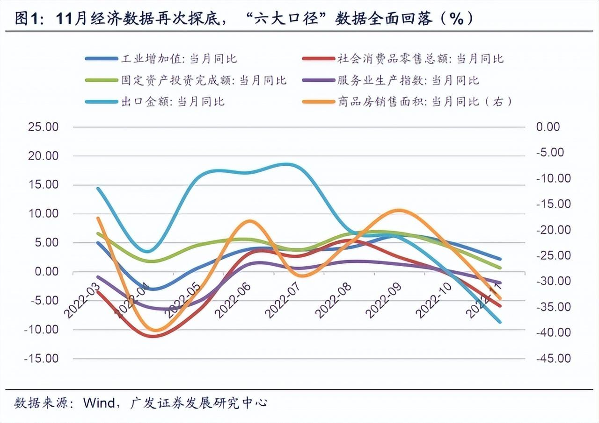

新闻动态
-
双节将至，农村如何应对新冠感染？
农村有基础病的老人，加上新冠病毒的冲击,该怎么办？
地域宽广、人口庞大，但人均医疗资源有限的中国农村地区，面对可能到来的新冠感染高峰，应该怎么办？还有面对即将到来的返乡潮，农村地区又应该做好哪些准备？
阅读更多>
-
中科院院士陆林：疫情心理影响或超10年，医护、老幼尤需关注
中科院院士陆林：疫情心理影响或超10年，医护、老幼尤需关注
中国科学院院士、北京大学第六医院院长陆林提供的一组数据显示，新冠疫情发生三年来，全球新增近7000万抑郁症患者，9000万焦虑症患者，1亿人出现失眠障碍。疫情对全人类精神心理健康的影响，最少要持续10-20年以上。
阅读更多>
-
-

放开后多久能恢复正常生活？张伯礼给出时间表
这几日，我们见证了一些发“疫情财”的丑恶嘴脸，很多人买不到药，但有人却趁机囤药，抬高价格来赚取暴利。还有人借机炒作，让人们去抢黄桃罐头、电解质水等无用的商品。
随着感染的人越来越多，再加上这些乱象。关于放开和清零的争论又开始了，为什么选择在这个时候放开……
阅读更多>
关于我们
-
-
-
没有版权，以上均为引用
如有侵权相关问题，请联系如下邮箱
ebyte@foxmail.comHTML@2022-2023
 一天前
一天前